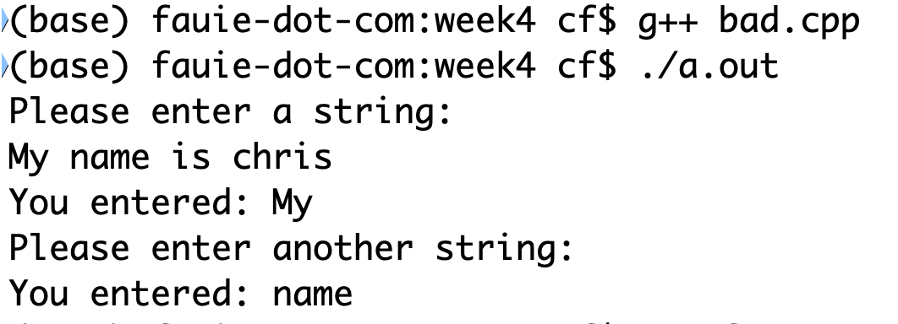

class: center, middle # INFO 450 Spring 2020 # Week 4 - Feb 6, 2020 --- --- # Homework Review Assignment 1: Write a program that asks the user for the radius of a circle and using a function, calculate the circumference of the circle. Requirement: The function MUST match this signature: ```c++ double calculateCircumference(double radius); ``` You MUST use a `const` declaration of PI in the global scope. github/-your repo-/week3/circumference.cpp --- <small>Complete the program below. The only things you are allowed to change are inside those two functions at the bottom. Don't touch anything else.</small> github/-your repo-/week3/build_functions.cpp ```c++ #include <iostream> using namespace std; char get_user_input(); void to_upper_case(char &letter); int main(){ char user_input_letter; cout << "Type in a letter grade, lowercase or uppercase." << endl; if ('0' != (user_input_letter = get_user_input())){ to_upper_case(user_input_letter); switch (user_input_letter){ case 'A': cout << "Super Great job on an A!" << endl;break; case 'B': cout << "Great job on a B!" << endl;break; case 'C': cout << "Good job on a C!" << endl;break; case 'D': cout << "Keep at it, you can get there." << endl;break; case 'F': cout << "F is for #fail" << endl;break; default : cout << "This is not a valid grade: " << user_input_letter << endl; } } cout << "You have entered 0. Exiting." << endl; } char get_user_input(){ //Implement this function } void to_upper_case(char &letter){ //Implement this function } ``` --- # Life after college <a href="https://business.vcu.edu/academics/information-systems/bs-in-information-systems/">https://business.vcu.edu/academics/information-systems/bs-in-information-systems/</a> Alumni employers include: * CarMax * Dominion Energy * Federal Reserve Bank * WestRock * Accenture --- # Careers in the field * Computer Security Analyst * Computer Systems Administrators * Computer Systems Analyst * Computer Systems Managers * Computer User Support Specialists * Database Administrator * Information System Managers * Information Technology Project Managers * Network Systems Administrators * Programmer * Systems Analyst * Web Administrators --- # So what do you do? Resume? Internships? Are you qualified? Are you confident? --- # Get prepared * Tell me a little bit about yourself. * What are your strengths and weaknesses? * What accomplishments are you most proud of? * Do you work better under pressure or with time to plan and organize? * Why are you interested in this internship? * Why should we consider you for this internship? * What do you know about this industry/company? * How would your faculty/friends/co-workers describe you? * What three words would you choose to best describe yourself? * Why did you choose your major? --- # Behavioral Interview Questions * Give an example of how you’ve dealt with a conflict with another person. * Tell me a story either personal or professional that paints a picture of you. * Describe a situation where your judgment proved to be an invaluable contribution to a team. * How do you handle meeting tight deadlines? * Give an example of how you set goals and achieve them. * What do you do when your schedule is interrupted? Give an example of how you handle this. * Give an example of how you work on a team. * Can you remember a time when you handled a difficult situation with another student or co-worker? What did you do? * Share an example of how you’ve been able to motivate team members. * Describe how you would handle a difficult relationship that you felt was holding you back on the job. --- # Arrays * An <i>array</i> is group of consecutive memory locations with the same name and data type. * Variables we've seen so far are a single memory location. One block of data. They're addressed by a unique name and type. * An array is a sequential collection of memory locations, addressed with the same name. * The memory locations in the array are known as <i>elements</i> of the array. * The total number of elements in the array is called the <i>length</i> * Each element of an array is accessed by <i>index</i> --- # One Dimensional Array * Declared with the following format: data_type array_name[length] * To reference an element, the syntax is: array_name[index] * For example, to declare an array that can store a trong of up to 10 characters, we can use: ```c++ char my_char_array[10]; ``` * The first element in an array is ALWAYS referenced with an index of <i>0</i>. * The last element of an array is always referenced with an index value of <i>length - 1</i> --- * Examples of one-dimensional array declarations: ```c++ int n1[5]; int n2[100]; int n3[200]; float real_numbers[5]; double double_numbers[1000]; ``` * Arrays can be declared and initialized on the same line: ```c++ int my_numbers[5] = {3, 5, 66, 90, 1}; char my_char[4] = {'A', 'B', 'C', 'D'}; ``` * Valid element references ```c++ my_numbers[0]; my_chars[2]; int i=1; my_numbers[i]; ``` * Invalid arrray element references: ```c++ n2[-1]; real_numbers[2.5]; double_numbers[1000]; // syntactically valid, logically invalid. ``` --- # Examples ```c++ #include <iostream> using namespace std; int main(){ int integer_array[5] = {1,2,3,4,5}; int i; for (i = 0; i < 5;i++){ cout << "Value at position " << i << " integer_array[i] << endl; integer_array[i]++; } for (i = 0; i < 5;i++){ cout << "New Value at position " << i << " integer_array[i] << endl; } } ``` --- # Two-Dimensional Array * Also referred to as a table * A two dimensional array has two indices/indexes. The first index refers to the row, while the second refers to the column. * The syntax in declaring two-dimensional arrays in C++: data_type array_name[row_size][column_size] e.g. ```c++ int two_d_array[2][5]; ``` * Something like: <table style="font-size: .5em;"> <tr> <td>two_d_array[0][0]</td> <td>two_d_array[0][1]</td> <td>two_d_array[0][2]</td> <td>two_d_array[0][3]</td> <td>two_d_array[0][4]</td> </tr> <tr> <td>two_d_array[1][0]</td> <td>two_d_array[1][1]</td> <td>two_d_array[1][2]</td> <td>two_d_array[1][3]</td> <td>two_d_array[1][4]</td> </tr> </table> --- # Example - Two Dimensional Array Nested for loops are used to iterate the contents of a 2-D array. ```c++ #include <iostream> using namespace std; int main(){ int two_d_array[2][3] = { {1,2,3}, {4,5,6}}; int row; int col; for (row = 0;row < 2;row++){ for (col = 0;col < 3;col++){ cout << "Row[" << row << "] "; cout << "Column[" << col << "] "; cout << << two_d_array[row][col] << endl; } } return 0; } ``` --- # Caution - No bounds checking * C++ performs no bounds checking on arrays * Nothing stops you from overrunning the end of an array * It is YOUR job to provide bounds checking and to ensure that all arrays are large enough to hold what the program will put in them: ```c++ #include <iostream> int main() { int my_array[10]; int i; for (i = 0; i <= 10;i++){ my_array[i] = i; } return 0; } ``` ```bash $ g++ nobounds.cpp $ ./a.out [1] 9929 abort ./a.out ``` --- # Strings Strings are just arrays. Arrays of characters. In C++ a <strong>string</strong> is a special type of <i>character array</i>. Strings, behind the scenes, end with a 'null' character. As a value to assign to a variable, this null character is represented like this: ```c++ char null_character = '\0'; ``` A <i>string literal</i> is a list of characters enclosed in double quotes: ```c++ "Hello, World!" ``` --- # Strings A character array can be initialized as: ```c++ char myString[] = "C++ is kinda cool!"; ``` In the above code, <i>myString</i>, is a string that holds 19 characters. "C++ is kinda cool!" is 18 characters, plus the <i>null</i> character which is automatically added. Other ways to initialize: ```c++ char myString[10] = "C++ Rocks"; char myString2[] = {'C', '+', '+', ' ', 'R', 'o','c','k','s', '\0'}; char myString3[10] = {'C', '+', '+', ' ', 'R', 'o','c','k','s', '\0'}; ``` --- # Strings Memory representation of a string: ```c++ char myCharArray[] = "Hello"; ``` |H|e|l|l|o|\0| |--|--|--|--|--|--| |72|101|108|108|111|0| --- # Example - String input / output ```c++ #include <iostream> using namespace std; int main() { char str[100]; cout << "Please enter a string: " << endl; cin >> str; cout << "You entered: " << str << endl; cout << "Please enter another string: " << endl; cin >> str; cout << "You entered: " << str << endl; return 0; } ``` --- # Uh oh, what happened?  * Only "My" is displayed instead of "My name is chris" * This is because the extract operator >> considers space as a termination character. --- # Strings - cin.getline() 2 forms: ```c++ istream& getline (char* s, streamsize n); istream& getline (char* s, streamsize n, char delim); ``` * Extracts characters from the stream and stores them into <i>s</i> as a c-string, until either the extract character is the <i>delimiting character</i>, or <i>n</i> characters have been written to <i>s</i> (including the terminating null character. * The delimiting character is the newline character (\n) for the first form, and <i>delim</i> for the second: when found in the input sequence, it is extracted from the input sequence, but discarded and not written to s. * A <i>null character</i> '\0' is automatically appended to the written sequence if <i>n</i> is greater than zero, even if an empty string is extracted. --- # Example ```c++ #include <iostream> #include <stdio.h> using namespace std; int main() { char str[100]; cout << "Please enter a string: " << endl; cin.getline(str,100); cout << "You entered: " << endl; cout << "Please enter another string: " << endl; cin.getline(str, 100); cout << "You entered: " << str << endl; return 0; } ``` --- # Lab time! * Write a program to input your name in the keyboard, save it to an array and then iterate through the array to count the number of characters of the inputted text. In class dev! ```bash $ vi mycode.cpp $ g++ mycode.cpp $ ./a.out Enter a name: > Chris Your name has 5 characters. ``` --- # Homework! Write a program that reads a set of 10 whole numbers from the user into an array. Once read in, it calculates the mean and the standard deviation of the numbers then displays the results to the console. 1. Find the mean (the simple average of the numbers) 2. Then, for each number, subtract the mean and square the result. 3. Then, work out the mean of those squared differences. 4. Take the square root of that, and we're done! ```bash github/-your repo-/week4/program1.cpp ``` * This program should prompt the user like below. * Expect the user to enter 10 numbers. * Then on one line, print the average and the standard deviation. * Example on next page. --- # Example ```bash $ ./a.out Enter the number for index 0: 10 Enter the number for index 1: 20 Enter the number for index 2: 30 Enter the number for index 3: 40 Enter the number for index 4: 50 Enter the number for index 5: 60 Enter the number for index 6: 70 Enter the number for index 7: 80 Enter the number for index 8: 90 Enter the number for index 9: 100 results, 55, 28.7228 ``` Last line is the output. --- # Homework 2! Write a program that inputs the names of the students in the class (to a max of 30 names) Store them in a 2-dimensional array Then outputs the class list to the console when the user enters an empty string (by pressing enter) ```c++ program2.cpp ``` --- # Example ```bash $./a.out Please enter student for index 0: Chris Fauerbach Please enter student for index 1: Jan Janson Please enter student for index 2: Sarah Sarason Please enter student for index 3: students[0] = Chris Fauerbach students[1] = Jan Janson students[2] = Sarah Sarason ``` --- # A note about homework. Follow the paths/file names! This will be the first time I verify code by automatically running it! If I get the test harness running / open sourced, I'll show you how to run it! --- # Next Week! # <strong>String Functions</strong> # <strong>Sorting Algorithms!</strong> --- --- #